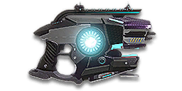

← Back to the Spiker comparison
Sage Guide · Vanu Sovereignty · Pistol
The 1,000-cert Vanu pistol — a 2-round burst sidearm that hides a second gun inside it: hold the trigger and it becomes a charged anti-armor shot. Usable by every class except MAX; this page teaches you the burst first, and the charge second.
The one-line verdict: A perfectly good 2-round burst pistol wearing a 4-second charge gimmick as a hat. Learn the burst — it kills in 3 pulls up close — and treat the charged shot as an ambush opener, never a mid-fight plan.

The Spiker · Vanu Sovereignty · 1,000 certs · 16-round magazine
*349 RPM is the averaged rate. Inside a burst the gun fires at 769 RPM; bursts are 172 ms apart. †150 m/s is the charge-mode velocity. Burst mode flies at 325 m/s.
Picture the scene, because you've probably lived it: you're sprinting across a courtyard, an enemy appears, and you do everything at once — hold the trigger down while you're still running, then press aim-down-sights (ADS) a split-second later, finger still down. The sight picture snaps in, it looks precise… and your bullets spray everywhere except the man in your crosshair. He kills you. It feels like the game cheated. It didn't — here's what actually happened.
Four beats, left to right — the same mistake the cards above describe, drawn out.
1 · SprintingYour cone starts maxed at 7.0° — the widest it can ever be.
2 · Trigger heldFiring from the hip while running — every shot adds bloom.
3 · ADS, mid-holdThe sight looks precise — but aiming down sights does not reset bloom.
4 · The sprayBullets fly out of the wide cone you built. The enemy walks away.
Same fight, done right. Each beat has a job, and the order is the whole lesson.
1 · StopLet go of sprint (and the trigger). About 0.3 s for the gun to settle.
2 · AimPress ADS and let the sight come up (~0.15 s).
3 · FireNow fire — from the aimed cone. First shots land where the dot points.
The exception — under ~8 m, skip the whole danceHipfire works, no ADS needed, and stopping is optional. Keep moving, strafe, and let the hipfire ring do the work.
You started firing from a sprint, from the hip. Sprinting is the least accurate state in the game: your cone of fire starts at 7.0° — fully bloomed, the widest it can ever be. Every shot you fire from the hip widens it further still (+0.12° per shot).
Then you pressed ADS mid-hold — and nothing reset. Aiming down sights does not shrink a cone of fire that is already bloomed. The scope only gives you a precise picture; the bullets keep flying out of the wide cone you built while running and hipfiring. That's the whole mystery: accurate-looking aim, wildly inaccurate gun.
Two timers stack the deck further: your gun needs about 0.3 s to settle after a sprint, and raising the sight itself takes ~0.15 s. Trigger held through all of it means your first half-second of fire is pure confetti.
The Spiker makes this worse in one specific way: every trigger pull fires two rounds, so a panicked hold empties the 16-round magazine in eight pulls — and the burst you fired while sprinting was two misses, not one.
1 · Feet. Let go of sprint (and the trigger, if you're already holding it). Stop, or drop into a strafe — anything but a full sprint.
2 · Sight. Press ADS and let the sight come up. This takes a heartbeat — that's fine, a quarter-second of patience is cheaper than a magazine of misses.
3 · Trigger. Now fire. Starting from the aimed cone of 0.5°, your first shots land where the dot points, and you control the bloom from zero instead of inheriting a maxed-out cone.
Stop → aim → fire. If you take one habit from this entire page, take this one. You'll practise exactly this rhythm in the simulator in section 04.
Spiker note: in burst mode, one click is one 2-round burst. Don't mash the trigger — click, let the 172 ms gap pass, click again. The simulator in section 04 trains exactly that rhythm.
Every enemy infantry has 1,000 health (500 shield + 500 health). In burst mode your bullet does 167 damage up close, fading to 84 at long range. Headshots count double, leg shots count less (×0.9). That gives you three numbers worth memorising — and one warning: the table below uses the data pack's per-shot refire figures, which are not how fast this gun really kills. Read the burst-model table underneath it.
| Range | Damage / bullet | Head | Chest | Legs | Chest vs shielded Heavy |
|---|---|---|---|---|---|
| Close · 0–10 m | 167 | 3 | 6 | 7 | 9 |
| Mid · 10–25 m | 142.1 | 4 | 8 | 8 | 11 |
| Far · 25–40 m+ | 117.2 | 5 | 9 | 10 | 13 |
Data-pack times to kill (per-shot refire model): 6 chest shots ≈ 0.86 s, 3 headshots ≈ 0.34 s up close. Those numbers treat every shot as 172 ms apart — but the Spiker fires in 2-round bursts, so they overstate the real kill time by roughly double.
The wiki's fire-mode data settles this: inside a burst the Spiker fires at 769 RPM — about 78 ms between the two rounds — and bursts are 172 ms apart. So a kill is not (shots − 1) × 172 ms. It is bursts × 172 ms, plus one 78 ms step whenever the kill needs the second round of a burst:
| Range | Chest shots | Headshots | Burst-model chest TTK | Burst-model head TTK |
|---|---|---|---|---|
| Close · 0–10 m | 6 | 3 | 422 ms | 172 ms |
| Mid · 10–25 m | 8 | 4 | 594 ms | 250 ms |
| Far · 25–40 m+ | 9 | 5 | 688 ms | 344 ms |
Worked example, up close: 6 chest shots = 3 bursts. First burst at 0 ms, second at 172 ms, third at 344 ms, and the killing sixth round lands 78 ms after the fifth — 422 ms, not 860 ms. The data-pack table is kept above because it is the series' shared ground truth; the burst model is the one to believe in a fight.
Press B (Switch Fire Group) and the Spiker stops being a burst pistol. It becomes a single-shot charged weapon: hold the trigger, wait, release. The longer you hold, the harder it hits — and the damage type changes to anti-materiel, so it can hurt MAXes and damage vehicles lightly. The price is time: the full 400-damage level takes 4 seconds of holding still, and there is no visual indicator, only audio.
| Charge level | Hold time | Direct damage | Splash | Ammo used | What it kills |
|---|---|---|---|---|---|
| Level 0 — uncharged | 0 s (tap) | 50 | — | 1 | Nothing quickly: 20 shots to kill. Never tap in charge mode. |
| Level 1 | ≥ 2 s | 200 | 50 within 0.5 m, 1 after 2 m | 2 | 5 shots to kill a fresh target. A MAX takes 50 of them — forget it. |
| Level 2 | ≥ 4 s | 400 | 150 within 0.5 m, 1 after 2 m | 4 | 3 shots to kill. The only level worth the wait — and only from ambush. |
Charge-mode damage is fixed — it does not fall off with range the way burst-mode damage does. Damage type is anti-materiel plus a little common explosive, so charged shots can hurt MAXes and damage vehicles lightly. There is no visual charge indicator on the gun, only audio feedback — you judge the level by ear and by counting seconds.
One gun, different fighting styles by distance. The right technique changes with range — use the range finder below to see what your bullets do at any distance, then learn the bands underneath it.
How to fight here
Aim: centre of the chest, from the hip. Keep moving.
Scoping in costs you time and drops your speed to 0.75× — at arm's length that gets you killed. One click is a 2-round burst: 334 damage per pull up close, so two pulls leave a fresh target one round from dead. Strafe side to side (A/D) while firing so you're hard to track.
Aim: neck / upper chest. Click once per burst, ~172 ms apart.
This is where the gun earns its keep: full 167 damage to 10 m, still ~142 at 25 m. Start your crosshair at the neck — the natural upward climb walks your second round into the head. Strafe while scoped; at 0.75× you move faster aimed than a scoped Heavy, and a moving target still beats a still one.
Aim: chest. One burst, pause, one burst.
Damage is sliding from ~142 toward 84 and your cone blooms if you click too fast. The 172 ms gap between bursts is your friend — it is also the cone's reset time. Crouch or stand still when you can — both tighten your shots.
Aim: chest. Single bursts at exposed targets only.
At 84 damage you need 9 chest shots — five bursts, a long, loud advertisement of your position. Take these shots at stationary or fleeing targets only. Otherwise, your better play is to close the distance behind cover, or switch back to your primary. Knowing when not to shoot is a skill too.
Your accuracy is decided by two things before skill even enters it: what your body is doing (your stance sets the starting cone of fire) and what your finger is doing (holding the trigger grows that cone with every shot). The Spiker has two fire modes — 2-round burst and charge — switched with B. In burst mode, "firing modes" are something you do with your finger, not a setting on the gun.
| Stance | Starting cone | What it means for you |
|---|---|---|
| Sprinting | 7.0° | Maxed out — the widest the cone can be. Never start firing from a sprint. |
| Hipfire, moving | 1.5° | Walking or strafing from the hip. Your first 4 shots while moving stay at the standing cone; after that, bloom takes over. |
| Hipfire, standing | 1° | Your point-blank default. |
| Hipfire, crouched | 1° | Crouch when holding a doorway from the hip. |
| Aimed (ADS), feet planted | 0.5° | Standing or crouched makes little difference here. This is why section 01's order matters. |
| Aimed (ADS), strafing | 0.5° | The moving floor — the same as standing still, so strafing costs you nothing in cone size on this gun. You still move at 0.75× while scoped. Strafe between shots to stay hard to hit; plant your feet for each shot. |
| Mode | How your finger does it | Use it at |
|---|---|---|
| The burst tap — the default | One click = one 2-round burst. Click, wait ~172 ms, click again | Almost everything, 0–25 m. Each burst starts at 0.50° aimed. |
| The mag dump | Mash the trigger as fast as it will go | Point blank only, or suppressing a doorway. Bloom maxes out fast — and the 16-round magazine is gone in eight pulls. |
| The charged shot | Switch to charge mode (B), hold 2 s or 4 s, release | Ambush only: a doorway, a cloaked stalk, a MAX that hasn't seen you. Never mid-fight — 4 seconds of holding still is a death sentence in a fair fight. |
A target 10 m away. Tap the burst button and two rounds leave ~78 ms apart, with the next burst ready 172 ms after the first started. Hold the charge button and the meter fills — release before 2 s for a 50-damage pop, after 2 s for a 200-damage level-1 shot, after 4 s for the full 400-damage level-2 shot. There is no charge indicator on the real gun, only audio — so learn the timing by feel here.
Charge level — fills over 4 seconds of holding. Level 1 at 2 s (200 damage), level 2 at 4 s (400 damage).
Cone of fire — fills as you fire, empties when you pause.
Tap for a 2-round burst, or hold to charge. The trainer shows what each one really does.
Some things are easier to show than to say. Here's what your bullets actually do: how wide hipfire spreads at 8 metres, what a good tap rhythm looks like, and what the fixed iron sights really show you. The hands-on version — tapping the trigger yourself — is the practice window in section 04.
A full-size target 8 m away. The rings show where hipfire rounds land around your aim point (the chest). Sizes are drawn to scale from the gun's real cone-of-fire numbers.
Read it this way: standing still, the 0.14 m ring fits well inside the chest — most rounds hit a target this size, which is why hipfire works point-blank on this gun. Move and it grows to 0.21 m — still inside the torso. The rings only grow with distance while the man doesn't, so past ~10 m they start leaking past him: the exact moment to switch to aiming down sights, where the spread shrinks to a 0.07 m ring. (Ring sizes use the real geometry: spread diameter = 2 × distance × tan(cone ÷ 2).)
Every shot widens your cone of fire ("bloom"). Releasing the trigger for a heartbeat resets it. Same 16 rounds, two very different outcomes:
The target pattern is one click per burst — that is the whole rhythm. There is no 5-round ideal burst on this gun: a burst is 2 rounds by design, and the 172 ms gap between bursts is the cone's reset time. Past that, the bloom (0.06° per shot aimed, 0.12° from the hip) keeps growing with every shot, so the extra bullets mostly decorate the wall behind your enemy instead of hitting him.
No zoom. The target at 25 m is small but the view is wide open — you see the crate, the tower, and the next enemy coming. Fast to aim, nothing blocks your edges. Best inside ~25 m.
Same target, same 25 m — but he looks twice as tall, so placing bursts on his chest and head gets much easier. The price: your view narrows to the round window, and close targets feel fast and huge. Best at 15–40 m.
That's the whole 30-cert decision from section 06 in one picture: 1x for awareness, 2x for precision. Most veterans carry both and swap per base — indoors 1x, open ground 2x.
Unlike the starter pistols, the Spiker ships with an optic slot, a barrel slot and a rail slot — but no ammo types. Buy in the order shown and stop whenever the gun feels right. Every optic costs 30 certs; every barrel, rail and magazine option costs 100 (the Compensator price is the series standard — the wiki's attachment table does not list it).
The chunky post-and-ring sights the gun ships with. Usable, but they eat a lot of your view — the first thing to replace.
Good: your first hour, while you decide whether you like the gun.
Bad: any fight past 20 m — the front post covers the target you're trying to hit.
A clean dot-and-circle sight with no zoom. Your default once you own it, and honestly your best all-round option.
Good: everywhere indoors and out to ~25 m — which is most PlanetSide fights.
Bad: picking out targets past 30 m; that's what the 2x is for.
Doubles your view magnification. Costs almost nothing — the price of a couple of kills.
Good: open-field bases, tower fights, and your 15–40 m burst game. Swap between 1x and 2x per fight.
Bad: tight indoor rooms — the zoom makes close targets feel fast and huge.
The Spiker's recoil is already mild — vertical 0.7, straight up, no angle. Plenty of veterans run this slot empty forever.
Good: your first weeks. Spend certs on your suit slots and the rest of your kit first.
Bad: nothing — there's no downside to an empty slot.
You vanish from the minimap when firing and your shots are quiet. In exchange, damage starts dropping off 20 m sooner and bullets fly 15% slower — burst mode 325 → 276 m/s, charge mode 150 → 128 m/s.
Good: stalker-infiltrator play, where the charged ambush shot is the whole plan and silence is survival.
Bad: front-line fighting — and note the price on this gun: full damage only reaches 10 m, so with a suppressor it starts fading almost as soon as it leaves the muzzle.
Cuts vertical recoil. Costs you: hipfire spread grows, and enemies see you on the minimap from farther away when you fire.
Good: if you mostly aim down sights at mid-range and the upward climb bothers you.
Bad: as an early purchase — the Spiker's recoil is already 0.7 straight up, and the burst is only two rounds. There is almost nothing to compensate.
Hipfire accuracy improves by a third (33% tighter cone) — your standing hipfire ring at 8 m shrinks from 0.14 m to 0.09 m.
Good: indoor point-holds and stairwell fights where you hipfire inside 8 m.
Bad: open bases — you give up nothing else for it, but the bonus only matters up close.
A torch whose beam reveals cloaked infiltrators. Toggle it with the attachment key (X by default).
Good: hunting a stalker infiltrator camping your capture point — sweep corners with it.
Bad: as your everyday rail — it gives zero accuracy help, and the beam advertises your position.
Magazine grows by 4 rounds (16 → 20). Costs you: the weapon takes 15% longer to equip and unequip.
Good: if you use the Spiker as a finisher — two extra bursts per magazine is a whole extra kill.
Bad: if you quickdraw it under fire — the slower swap is the price of the ammo.
A pistol is a sidearm, not a kit. Each setup below is the pistol plus the primary it finishes for — the gun is the same in all four, the job changes.
0 certs · Day one
What 1,000 certs buys you. Genuinely good — learn the burst on this before spending anything. Pairs with any VS primary: it finishes what your Orion, Pulsar or Serpent started.
130 certs · Recommended
The best value in this whole guide. Covers every fight from a doorway to a tower courtyard. Your primary does the work; this ends the fight when the magazine runs dry.
230 certs · Finisher
Built to kill twice without reloading. Two extra bursts per magazine is a whole extra kill — the loadout for a Heavy or Medic whose primary just emptied into a room.
230 certs · Stalker
No minimap blip, quiet shots, and a charged level-2 shot (400 damage) waiting behind a door. Weak in a fair fight — so don't take fair fights. Charge behind cover, step out, release, switch back to burst mode.
Headshots deal double damage: 3 headshots kill up close in 172 ms of burst time, versus 6 to the chest in 422 ms. Don't aim at the head directly — aim at the neck and let the second round of each burst climb into the skull. It's the single biggest damage upgrade you own, and it's free.
Every trigger pull fires two rounds. Mashing the trigger fires bursts as fast as the 172 ms gap allows, which is also the fastest your cone can bloom. Click deliberately, once per burst, and your groups stay fist-sized. The simulator in section 04 is exactly this skill.
A level-2 charged shot needs 4 seconds of holding still. In a fair fight that is a death sentence; behind a door, against a MAX that hasn't seen you, or as a stalker opening a kill, it is 400 damage for free. Charge behind cover, step out, release — then switch back to burst mode (B) and finish the fight properly.
Reloading with rounds left takes 1.53 s; an empty gun takes 1.85 s. Sixteen rounds is eight bursts — count them. When you do reload, do it behind cover, because a second and a half is a long time to stand in a doorway.
Walk with your crosshair at head height, pointed where an enemy's head will appear — a doorway edge, a corner, stairs. Most beginners lose fights in the half-second spent dragging the crosshair onto target. While firing, tap A/D to strafe: at 0.75× aimed speed you're faster than almost anyone scoped in against you, and a moving target is dramatically harder to headshot back.
Your standing hip cone is 1.0° and the 0.14 m ring at 8 m fits inside his chest. Inside ~8 m, don't ADS at all: keep strafing and let the hipfire do the work. Past ~10 m the rings start leaking past him, and that's the exact moment to switch to the sight.
Every gun has a price. Here's where the Spiker pays — and the habit that covers each hole.
Six chest shots to kill, in 422 ms of burst time. Every bullet matters less than on a revolver's 450.
Play around it: Don't trade chest shots. Headshots close the gap entirely — 3 to kill up close in 172 ms — and the burst fires its second round almost for free.
Four seconds of holding still for 400 damage, no visual indicator, and the charged shot is slow (150 m/s) and easy to dodge at range. In the same 4 seconds the burst mode fires 23 rounds.
Play around it: Use the charge only from ambush. If you find yourself holding a charge while someone is shooting at you, release early or switch back to burst mode — a 50-damage pop now beats a 400-damage shot after you're dead.
The smallest magazine of any pistol on this page except the revolvers. Two missed bursts is a quarter of your ammo.
Play around it: Count your bursts. Reload early and only in cover (habit 4), and buy the Extended Magazine (100 certs) once the gun feels right — 20 rounds is ten bursts.
Past 60 m you're at 84 damage in burst mode: 9 chest shots, 18 against a shielded Heavy. The charged shot doesn't fall off — but at 150 m/s it takes a third of a second to cross 50 m, and anyone moving sidesteps it.
Play around it: Tap-fire at exposed targets only, and spend the rest of the time closing distance. You're a pistol — the doorway and the stairwell are your address.
Vertical 0.7 with a 0.5× first-shot modifier — the first round of a burst barely moves, the second climbs. At 25 m the second round can sail over a crouching target's head.
Play around it: Aim at the neck, not the head: the climb carries round two into the skull instead of over it.
Open the world map, travel to VR Training, and run these on the target dummies. Five minutes before a play session beats an hour of dying confused.
Aim at a wall 20 m away and empty a magazine in single bursts without touching the mouse. Watch the bullet pairs climb straight up — that's your gun's fingerprint. Repeat, pulling down gently, until each pair stays fist-sized.
Walk the dummy range keeping your crosshair glued to neck height the whole time, snapping to each new target without dipping to the floor or sky. Slow and clean first; speed comes on its own.
At 10–25 m, kill dummies with single deliberate bursts, waiting for the full 172 ms gap between clicks. If a burst goes wide, slow the click down. Goal: whole kills without a single wild round.
Switch to charge mode (B). Hold the trigger and count — release at 2 seconds, then at 4. Learn the audio cue and the timing by feel, since the real gun shows you nothing. Then practise the real move: charge behind a pillar, step out, release, switch back to burst.
Pick a dummy, stand 5 m away, and circle it with A/D while hipfiring it down without stopping. This is your point-blank survival skill — the one that fires while your movement does the defending.